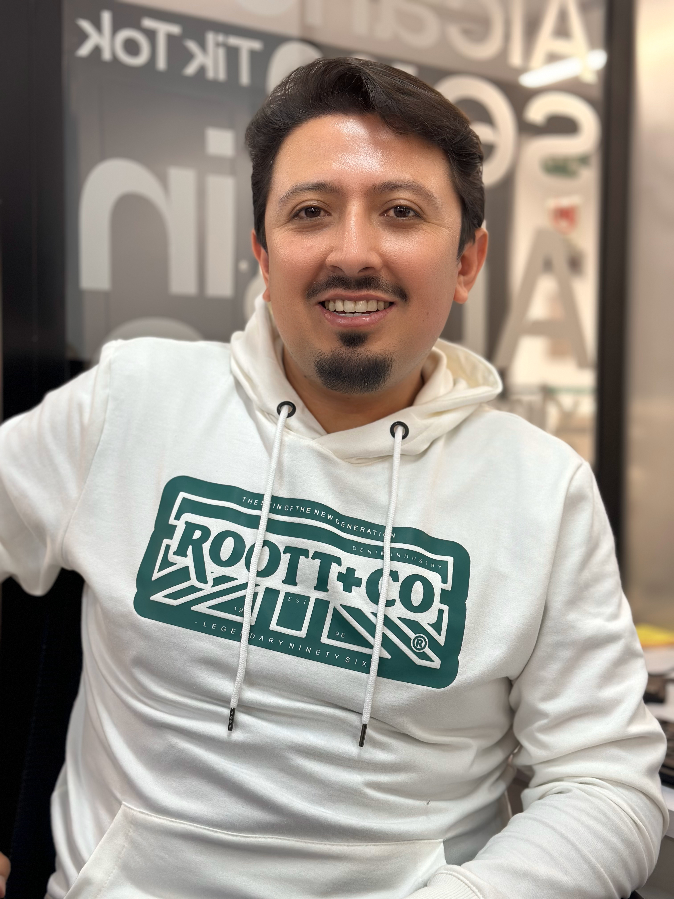

Hugo Aldemar Martinez

Summary
Over than 16 experience years in Marketing and commercial areas, specialized in Direction, sales impact strategies, Branding, digital Marketing, business development, market research, marketing or commercial teams building.
Specialities
- Marketing plan
- Sales Enablement
- Potentiate business processes
- Introduce products and services to market
- Sales force training
- Branding
- SEO / SEM
- Create and implement tools to optimize business processes (CRM and content)
- Digital Marketing
- Web development
- Value proposal development
- Content marketing
Software
- Semrush
- Office Suite
- Hubspot
- Odoo
- Photoshop
- Ilustrator
- Looker studio
- Elementor
- Google Ads
- Meta Ads
- Linkedin Ads
- Google Analytics
- Wordpress
- Ubbersuggest
- Screaming frog
- Tag manager
- Mail relay
Education
- Degree in Finance & International Business / 2010
.png)
- Specialist in Marketing Management / 2014
- Master en eCommerce y Marketing digital / 2022
Work Experience
Marketing Director
Setefanini Sysman
Functions
- Marketing Plan development and execution
- Website design anf development
- Carry out market intelligence and analysis including benchmarking
- Campaings planning and execution to generate leads (Events, ADS, webinars)
- Social Media management
- SEO (off - on) & SEM
- Content Marketing
Marketing Manager
Dok
Functions
- Marketing Plan development and execution
- Website design
- Marketing investigation
- Design and execute product, commercial and brand strategies.
- Carry out market intelligence and analysis including benchmarking.
- Execute digital strategy for lead generation
- Social Media management
- SEO (off - on) & SEM
- PPT's and official content design
Marketing Director
Universal Rubbers
Functions
- Website Redesign
- Social media management
- Sales force training
- Markeitng investigation
- CRM Implementation
- Marketing Plan development
- Create and execute the strategy for leads generation
- SEO (off - on) & SEM
- Development of PPT's and official content
Cofounder & Makrketing Manager
Milla Express
Functions
- Website design
- Social media management
- Design and execute product, commercial and brand strategies.
- Carry out market intelligence and analysis including benchmarking.
- CRM Implementation
- Social Media management
- SEO & SEM
- CRM implementation
- PPT's and official content design
External Advisor
Pharma One
Functions
Cofounder and marketing Manager
Ara Its
Functions
- Website design
- Social media management
- Conduct business presentations and close deals
- Develope of advertising content and official content
- development of value proposal
- CRM Implementation
Sales & Project Manager
8 bit Group
Functions
- Lead the regional app operation
- Market analysis and bench marking
- Development of social media content
- Contribute settings about the app
- Development of the value proposal
- Define and execute de sales strategy
- Adjust the Europen sales model to Colombian market
- Do alliances with local companies and influencers
- Sales force coaching and leading